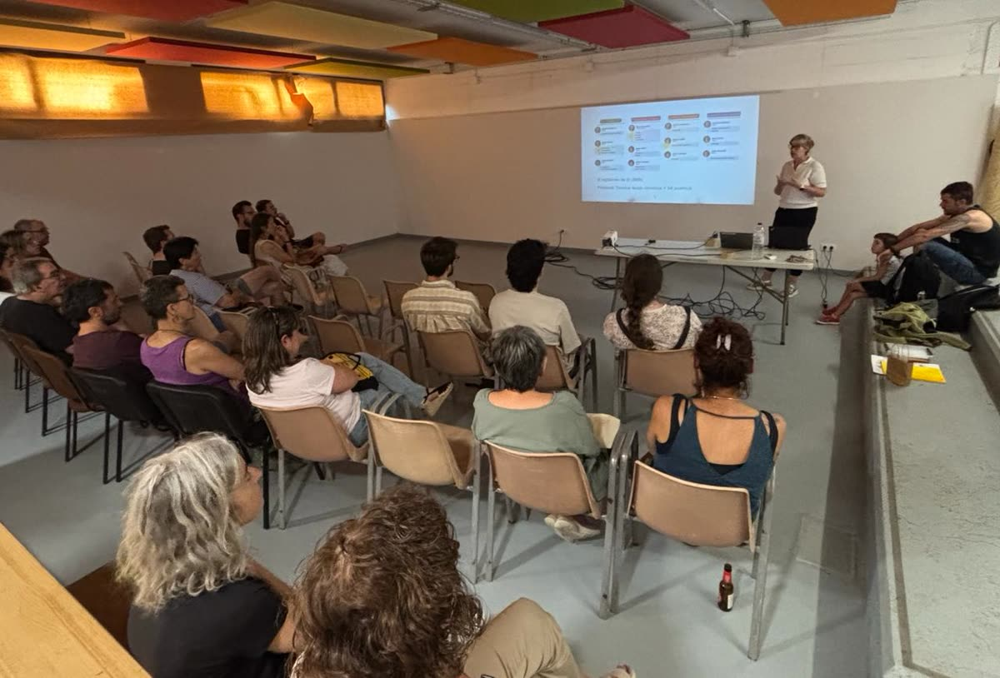

Maria Carbó serà la candidata a l’alcaldia de Subirats a les eleccions del 2027
L’espai polític d’Alternativa per Subirats-CUP aprova per unanimitat obrir el projecte a perfils independents dels 15 nuclis amb l’objectiu de guanyar les eleccions i construir un govern sòlid i transformador.
L’assemblea local culminarà aquest procés d’obertura amb la presentació passat l’estiu d’un nou vehicle electoral de clau estrictament municipal.

L’Alternativa per Subirats-CUP ha aprovat la seva nova estratègia política de cara a les eleccions municipals de 2027. En una assemblea general celebrada el 19 de juny, la militància va ratificar per consens un canvi de cicle que es vertebrarà al voltant de la proclamació de Maria Carbó com a candidata a l’alcaldia de Subirats.
Carbó, que ha adquirit una sòlida experiència de gestió a l’actual govern municipal, assumeix el repte amb l’objectiu de liderar un projecte netament guanyador que pugui agrupar la majoria progressista, d’esquerres i independentista que hi ha al municipi. «Subirats necessita un lideratge municipal clar, eficient, empàtic i transversal, capaç d’aportar més impuls, eficiència i transformació a l’acció institucional, i d’oferir un model de municipi cohesionat i integrador per als nostres quinze nuclis de població», ha manifestat la ja candidata oficial.
Nascuda l’any 1986, Maria Carbó és veïna del poble de Lavern i enguany farà 40 anys. En la present legislatura és la primera tinent d’alcaldia i regidora de Comunicació, Participació Ciutadana, Acció Climàtica i Agricultura, Transparència i «de tot allò que faci falta», com li agrada recordar. Llicenciada en Publicitat i Relacions públiques per la Universitat Autònoma de Barcelona, en l’àmbit professional ha estat vinculada al món de la comunicació des de fa més de 15 anys, gestionant comunitats digitals internacionals, liderant equips de treball en mitjans de comunicació d’àmbit nacional, exercint de CEO d’una empresa de disseny i comunicació i, des de fa tres anys treballa al departament de màrqueting de 3Cat. Una trajectòria que, en acabar la seva jornada laboral, posa en cos i ànima al servei de la gestió de l’Ajuntament de Subirats.

Una llista àmplia amb la incorporació de nous perfils independents
Més enllà d’acordar qui liderarà la pròxima candidatura, l’acord clau de l’assemblea fixa com a prioritat absoluta l’obertura del projecte a la ciutadania. L’estratègia per al 2027 passa per la creació d’una llista àmplia de confluència que combina el bagatge de la militància històrica amb la incorporació de nous perfils independents que són referents veïnals, culturals o professionals a cadascun dels pobles del municipi.
«El 50% dels votants de Subirats aposta per forces d’esquerres i independentistes, i nosaltres creiem que aquesta majoria s’ha de consolidar, ampliar i liderar decididament per continuar avançant amb més força en la transformació municipal que hem començat a fer aquesta legislatura», assegura Maria Carbó.
La candidata diu que ha arribat l’hora que el seu espai polític assumeixi la responsabilitat d’encapçalar l’alcaldia de Subirats: «Tenim 15 anys d’experiència municipal i posarem tota la força, tot l’entusiasme i tota la intel·ligència per liderar el següent govern de Subirats sortit de les eleccions del 2027».
Un govern, emfatitza Carbó, que tindrà com a objectius «fer una gestió impecable del dia a dia, garantir que cap dels nostres pobles i cap persona es quedi enrere i continuar treballant per crear unes comunitats fortes i cohesionades, que són necessàries i imprescindibles en un municipi tan complex i extens com el nostre. El nostre objectiu central continua sent el de fer de Subirats el millor municipi del Penedès».
«El 50% dels votants de Subirats aposta per forces d’esquerres i independentistes, i nosaltres creiem que aquesta majoria s’ha de consolidar, ampliar i liderar decididament per continuar avançant amb més força en la transformació municipal que hem començat a fer aquesta legislatura».
Maria Carbó, candidata a l’alcaldia
Un nou vehicle electoral en camí
Per fer possible aquesta obertura i interpel·lar la majoria progressista de Subirats, l’assemblea ha acordat que el projecte concorrerà a les urnes mitjançant un nou vehicle electoral d’àmbit estrictament local. La nova identitat i la marca d’aquesta candidatura es presentaran passat l’estiu.
Maria Carbó explica que «fa setmanes que mantenim converses amb diverses persones per tal de construir un equip solvent, professional i entusiasta per liderar el pròxim govern. Algunes d’aquestes persones ja s’han sumat al nou projecte i, plegades, estem buscant la resta de perfils amb el talent necessari per fer-se càrrec de les diverses àrees i regidories de l’ajuntament». Formar aquest equip és ara una de les prioritats de l’espai polític, ja que a l’octubre es vol presentar la nova candidatura amb totes les persones que la lideraran.
D’altra banda, l’assemblea també ha reafirmat el seu compromís amb l’espai supramunicipal garantint que aquest nou vehicle electoral s’articularà jurídicament sota la coalició d’Amunt, vinculada a la CUP, per blindar la representació i la veu de Subirats al Consell Comarcal de l’Alt Penedès: «En l’àmbit comarcal continuarem treballant amb les candidatures de l’esquerra independentista dels municipis del nostre entorn, una coordinació essencial en l’àmbit penedesenc a la qual no volem renunciar», conclou.
Amb aquestes resolucions, l’espai polític dona el tret de sortida a un canvi de cicle polític amb l’ambició no només de retenir la majoria de progrés al municipi, sinó d’esdevenir la força central i majoritària de l’Ajuntament de Subirats, fent que Maria Carbó pugui ser la primera dona a liderar l’alcaldia del municipi.
Subirats, 30 de juny de 2026 · Alternativa per Subirats-CUP
← Totes les notícies